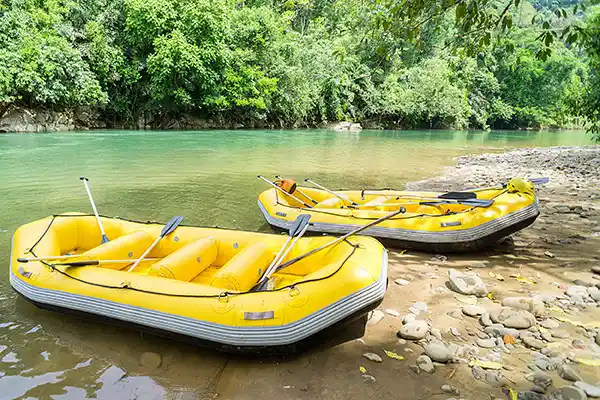
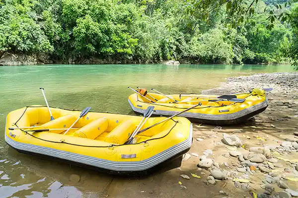

Know Our Trips

Salto de la Leona
Hidden deep within the heart of the Andes, Salto de la Leona is a breathtaking waterfall known for its powerful drop and crystal-clear waters. This adventure combines scenic beauty with thrilling rapids that challenge even experienced rafters. Along the route, visitors can enjoy panoramic views, wildlife sightings, and a refreshing swim in natural pools.
Salto de la Leona Reserve
Seven Rivers Canon
The Seven Rivers Canyon is a vast network of intertwined waterways surrounded by ancient rock formations and lush forests. Each section of the river offers a unique rafting experience—from calm stretches ideal for beginners to intense rapids for those seeking excitement. Our expert guides ensure a safe and unforgettable journey through this natural wonder.
Seven Rivers Canon Reserve
Big Blue Waterfall
Named for its striking turquoise hue, Big Blue Waterfall is a paradise for adventure seekers and nature lovers alike. The descent takes you through a series of exciting rapids that lead directly to the base of the waterfall, where mist and sunlight create a mesmerizing rainbow effect. It's the perfect spot to experience both adrenaline and serenity in one trip.
Big Blue Waterfall Reserve
Los Dientes del Lobo
Translated as The Wolf's Teeth, this dramatic stretch of river features sharp rock formations and fast-moving waters that promise a wild ride. Known for its unpredictable turns and natural obstacles, it's a favorite among advanced rafters. The name comes from the jagged peaks that resemble a wolf's bite an iconic sight that makes this route both challenging and unforgettable.
Los Dientes del Lobo ReserveOur Equipment
Our rafting adventures are fully equipped with high-quality, certified gear to ensure safety and comfort throughout the journey.
 

Helmet
Protects against rocks and impacts during intense rapids.
Life Jacket
Provides safety and buoyancy in all water conditions.
Paddle
Light, strong, and perfect for precise control on the river.
Wetsuit and Boots
Keep you warm, flexible, and comfortable in cold water.
Raft
Reinforced and stable for a smooth, safe adventure.
Safety Gear
Includes first aid, rescue ropes, and radios for quick response.